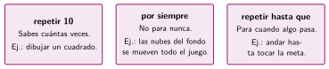
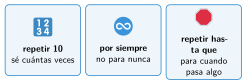

Por siempre y repetir hasta
🤔 Pienso5 min
Qué hago aquí: Piensa un momento y contesta con lo que ya sabes. No pasa nada si no lo sabes: es para empezar.
En «adivina el número» (UD05) tenías un solo intento. ¿Cuántas veces hay que preguntar? ¿Lo sabes antes de empezar?
📖 Leo y aprendo15 min
Qué hago aquí: Lee despacio, mira los dibujos y los ejemplos, y quédate con la idea clave del final.
A veces no sabes cuántas veces hay que repetir. Scratch tiene tres bucles:


✏️ Hago25 min
Qué hago aquí: Haz las actividades en orden. Empieza siempre por las básicas.
Monta el juego y juega una partida. ¿Cuántos intentos has necesitado?
¿Qué bucle usarías: repetir, por siempre o repetir hasta que?
- Un pez que nada por la pecera todo el rato.
- Un reloj que da 12 campanadas.
- Un coche que avanza hasta la meta.
Haz que un objeto rebote por el escenario sin parar: por siempre, mover 5 pasos y rebotar si toca un borde.
Haz una cuenta atrás: una variable empieza en 10 y baja 1 cada segundo hasta 0. Después el gato dice «¡Despegue!».
✏️ Puedes responder escribiendo, con un dibujo o un esquema, o contándolo en voz alta.
🚀 Amplío (si quieres saber más)
Qué hago aquí: ¿Has terminado? Lee la curiosidad o elige el reto. Es voluntario.
Mejora el juego: añade una variable intentos. Si pasa de 7, termina y dice el número secreto. Pista: usa o en la condición.
✅ Compruebo5 min
Qué hago aquí: Contesta sin mirar la ficha y marca cómo lo llevas.